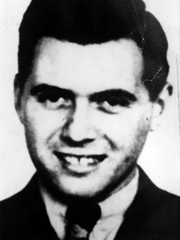
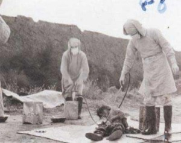

İkinci Dünya Savaşındaki İnsan Deneyleri
İkinci Dünya Savaşı çok fazla kaybın nedeni olsa da, insanlığın bir o kadar da ilerleme kaydetmesini sağlamıştır. Teknoloji, sağlık ve bunların dışında silah teknolojisi bu savaştan sonra tavan yapmıştır. Savaşın ortalarında galip pozisyondaki kimi ülkeler bu durumlarını fırsat bilerek işgal ettikleri ülkelerde insanları çeşitli şekillerde kullanmıştır. Herkesin bildiği Nazi Almanyası’nın Yahudiler, eşcinseller ve diğer enteresan gördükleri halklara karşı uyguladığı eylemler dışında müttefikleri olan Japonların da kendi yakınındaki bölgelerde çok da farklı politikaları olmamıştır. İstila ettikleri bölgelerde Çinli ve az sayıda Rus esirler üzerinde deneyler yapan Japonların bu hareketleri savaş sonucunda öğrenildiğinde insanlar tarafından hoş karşılanmasa da, ülkelerinin iki büyük şehrine atılan atom bombalarının etkisiyle unutulmuş, ve normalde devletler tarafından gerçekleştirilmesi mümkün olmayan bu deney sonuçlarının savaşta galip gelen devletlere verilmesi karşılığında üstü kapalı hale getirilmiştir. Bugün Almanya ve Japonya’nın kimi fiziksel ve sosyal deneylerinin sonuçları sağlık, genetik ve psikoloji gibi alanlarda kullanılmaktadır.

Nazi Almanyası’nda insan deneyleri dendiğinde akla Josef Mengele geliyor. Tipine bakıldığında kör etme yeteneğine sahip olan bu keko, Nazi toplama kampı Auschwitz-Birkenau’da yaptığı deneylerle bilinir. Deneyleri genellikle ikiz bebekler üzerinde ve üstün insan ırkı yaratmaya, bütün dünyayı mavi gözlü sarışınlarla donatmaya yönelik. Toplama kamplarından elde ettikleri çocukların göz rengi maviden farklı bir renkte ise şırıngayla gözüne sıvı enjekte ederek boyamaya çabalamak gibi enteresan işlere imza atıyor. Bu deneyi uyguladığı insanlar ise ari ırk dedikleri konuma en yakın olan toplama kampı esirlerinden seçiliyor. Deney başarılı bir şekilde sonuçlanıyor ve Almanya mavi gözlüler tarafından ele geçiriliyor. Şaka lan, hepsi kör oluyor. İnsan da bu kekoya “Bana sorsan söylerdim armut” demeden edemiyor.
Bunun dışında bir SS subayı paraşütle atladığı zaman basınca hangi seviyeye kadar dayanacağını ölçmek adına esirleri basınç odasına koyarak iç organları patlayana dek basıncı yükseltmek, soğuğa dayanıklılık konusunda soğuk su dolu bir küvete sokarak ölene kadar takip etmek gibi çalışmaları mevcut. Bu kadar düz mantık deneyler yaparak bir de enteresan şekilde doktor ünvanı bulunan bu eleman, aynı zamanda yüzbaşı rütbesine sahipti. Kimisi, muhtemelen tipini görmemiş olanlar buna Almanca “Ölüm meleği” anlamına gelen “Todesengel” diyor. Slayer’in Angel of Death şarkısı da buna yazılmış. 1944 yılında savaş suçlusu ilan edildikten sonra savaşın bitmesiyle başka bir isim alarak Avusturya’da gizlendi. Sonrasında Latin Amerika’ya kaçtı ve burada ölene kadar kaldı. Brezilya’da Denizde yüzerken felç geçirmesi sonucu da ölmüş bulundu.
Japonlar ise işi Almanlardan bir seviye ileriye taşıyor. 1931’de Mançurya’yı işgal ettikten sonra buraya Birim 731 (Unit 731)
Hiroşima’ya atılan atom bombası ve Sovyetler Birliği’nin Mançurya’ya girmesiyle Japon Komutanlığı birim 731’in imhasına karar veriyor. Tesis ve kalan tüm esirler imha edilip yakılarak tüm deliller yok ediliyor. Shiro ABD işgal yetkilileri tarafından tutuklansa da deney bilgilerini vermek karşılığında dokunulmazlık elde ediyor. 67 yaşında gırtlak kanserinden ölüyor.
İnsanlar üzerinde yapılan deneyler tarihin her döneminde mevcut olsa da bu kadar net deneyler ancak savaş dönemlerinde yapılabilmiştir. Savaş zamanı olsun olmasın, normalde açık açık yapılamayacak tüm deneylerin sonuçları bugün insanı ilgilendiren her bilim alanında kullanılıyor.